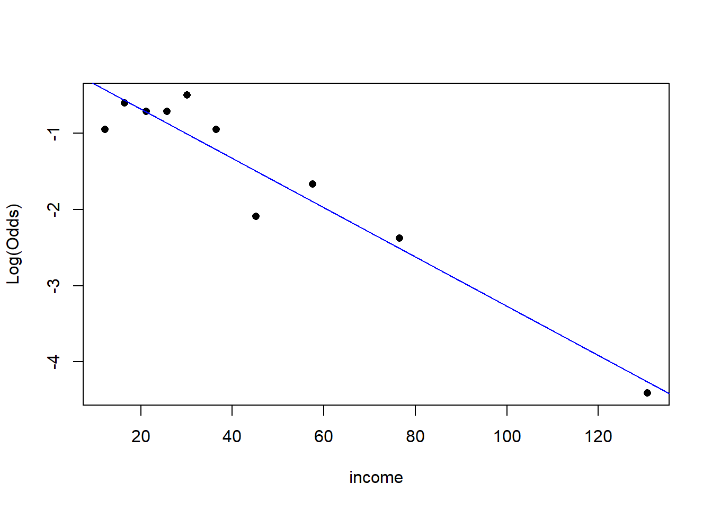

library(tidyverse)
library(ggformula)
library(Stat2Data)
library(broom)
library(knitr)
library(rms)Exam 02 Review
Important
Imagine that this is printed out for you and all answers are given in written form.
Note: This in-class review is not exhaustive. Use lecture notes, application exercises, and homework for a comprehensive exam review. It’s length is also not indicative of the length of the exam.
Packages
Data
The data for this analysis is about credit card customers. The following variables are in the data set:
income: Income in $1,000’slimit: Credit limitrating: Credit ratingcards: Number of credit cardsage: Age in yearseducation: Number of years of educationown: A factor with levelsNoandYesindicating whether the individual owns their homestudent: A factor with levelsNoandYesindicating whether the individual was a studentmarried: A factor with levelsNoandYesindicating whether the individual was marriedregion: A factor with levelsSouth,East, andWestindicating the region of the US the individual is frombalance: Average credit card balance in $.
credit <- read_csv("data/credit.csv") |>
mutate(maxed = if_else(balance == 0, 1, 0),
student = as.factor(student))Part 1: Linear Regression
The objective of this analysis is to predict a persons average card balance.
Exercise 1
Consider the following models:
model1 <- lm(balance ~ income + limit + age + rating, data = credit)
vif(model1) income limit age rating
2.754597 161.397384 1.036651 160.830635 What does VIF stand for? How do you use it? What conclusions can you draw from the output above.
Exercise 2
model2 <- lm(balance ~ income + limit + student + limit*student, data = credit)
tidy(model2) |> kable()| term | estimate | std.error | statistic | p.value |
|---|---|---|---|---|
| (Intercept) | -419.2675685 | 12.5863697 | -33.311239 | 0.00e+00 |
| income | -7.9475646 | 0.2386001 | -33.309145 | 0.00e+00 |
| limit | 0.2652167 | 0.0036815 | 72.040373 | 0.00e+00 |
| studentYes | 275.1225320 | 40.4303482 | 6.804852 | 0.00e+00 |
| limit:studentYes | 0.0323603 | 0.0078077 | 4.144661 | 4.17e-05 |
Describe and interpret the interaction term from the above model. Be sure to give the value of the coefficient an describe what it means.
Exercise 3
Consider the following analysis:
model3 <- lm(balance ~ income + limit + age + rating + limit*student, data = credit)
anova(model2, model3)Analysis of Variance Table
Model 1: balance ~ income + limit + student + limit * student
Model 2: balance ~ income + limit + age + rating + limit * student
Res.Df RSS Df Sum of Sq F Pr(>F)
1 395 4137079
2 393 3832554 2 304525 15.613 2.986e-07 ***
---
Signif. codes: 0 '***' 0.001 '**' 0.01 '*' 0.05 '.' 0.1 ' ' 1Describe the test above. Write down the null and alternative hypotheses, test statistic, p-value, and interpret the results.
Exercise 4
Based on the previous question and the output below, which model is better? Cite at least three forms of evidence.
glance(model2) |> kable()| r.squared | adj.r.squared | sigma | statistic | p.value | df | logLik | AIC | BIC | deviance | df.residual | nobs |
|---|---|---|---|---|---|---|---|---|---|---|---|
| 0.9509476 | 0.9504508 | 102.3407 | 1914.402 | 0 | 4 | -2416.383 | 4844.765 | 4868.714 | 4137079 | 395 | 400 |
glance(model3) |> kable()| r.squared | adj.r.squared | sigma | statistic | p.value | df | logLik | AIC | BIC | deviance | df.residual | nobs |
|---|---|---|---|---|---|---|---|---|---|---|---|
| 0.9545582 | 0.9538645 | 98.75245 | 1375.905 | 0 | 6 | -2401.091 | 4818.182 | 4850.114 | 3832554 | 393 | 400 |
Part 2: Logistic Regression
The objective of this analysis is to predict whether a person has maxed out their credit card, i.e., had $0 average card balance.
Exercise 1
- Why is logistic regression the best modeling approach for this analysis?
Exercise 2
# A tibble: 2 × 2
maxed n
<dbl> <int>
1 0 310
2 1 90Let \(\pi\) represent the probability that a person has maxed out their credit card.
- Compute the empirical probability
- Compute the empirical odds
- Compute the empirical log odds
Exercise 3
Consider the following code and output:
credit_rec <- glm(maxed ~ income + age + student,
data = credit, family = "binomial")
credit_rec |> tidy() |> kable()| term | estimate | std.error | statistic | p.value |
|---|---|---|---|---|
| (Intercept) | -0.3331885 | 0.4604783 | -0.7235705 | 0.4693295 |
| income | -0.0325537 | 0.0068189 | -4.7740540 | 0.0000018 |
| age | 0.0075144 | 0.0075360 | 0.9971344 | 0.3186993 |
| studentYes | -2.6142983 | 1.0264655 | -2.5468935 | 0.0108687 |
- Write out the formula for the probability of “success” that corresponds to this model.
- Write out the formula for the log-odds of “success” that corresponds to this model.
Exercise 4
What condition of logistic regression can be assessed with this plot. Does it appear that that condition is satisfied?
emplogitplot1(maxed ~ income, data = credit, ngroups = 10)
Exercise 5
What is wrong with the procedure below?
model1 <- glm(maxed ~ income + age + student, data = credit, family = "binomial")
model2 <- glm(maxed ~ income + rating + limit + age, data = credit, family = "binomial")
anova(model1, model2, test = "Chisq")Analysis of Deviance Table
Model 1: maxed ~ income + age + student
Model 2: maxed ~ income + rating + limit + age
Resid. Df Resid. Dev Df Deviance Pr(>Chi)
1 396 375.13
2 395 107.36 1 267.76 < 2.2e-16 ***
---
Signif. codes: 0 '***' 0.001 '**' 0.01 '*' 0.05 '.' 0.1 ' ' 1Exercise 6
Consider income below. Interpret the coefficient of income. There are two different answers I will accept here. Once this is done, interpret the p-value associated with income. Make sure to:
- State the null and alternative hypotheses
- Identify the test statistic
- State the distribution used to calculate the p-value
- State the conclusion of the test at a significance level of \(\alpha = 0.01\)
model2 |> tidy()# A tibble: 5 × 5
term estimate std.error statistic p.value
<chr> <dbl> <dbl> <dbl> <dbl>
1 (Intercept) 9.02 1.65 5.46 0.0000000482
2 income 0.111 0.0210 5.28 0.000000126
3 rating -0.0316 0.0217 -1.46 0.145
4 limit -0.00172 0.00145 -1.19 0.235
5 age -0.00383 0.0147 -0.261 0.794